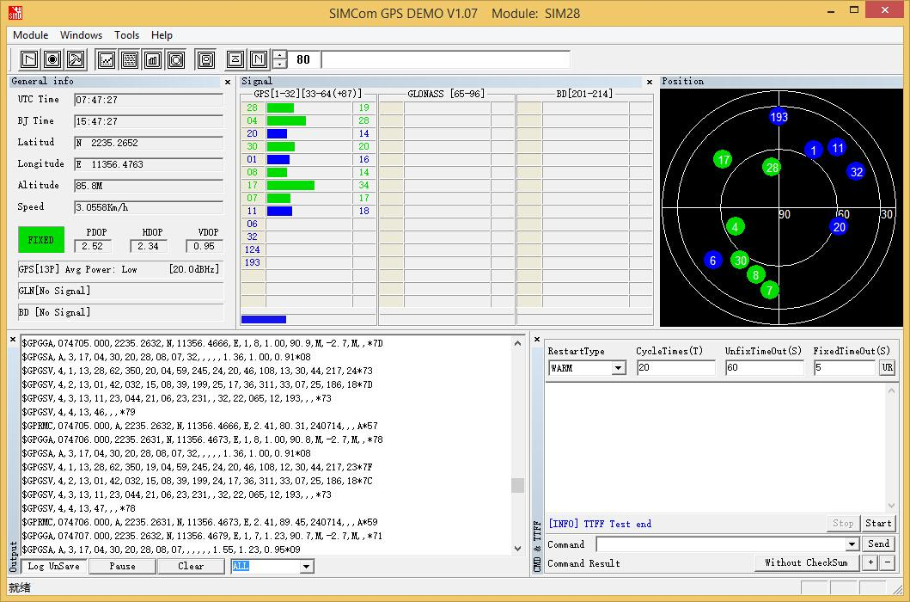

This Grove - GPS module is a cost-efficient and field-programmable gadget armed with a SIM28 (u-blox 6 is the old version) and serial communication configuration. It features 22 tracking / 66 acquisition channel GPS receiver. The sensitivity of tracking and acquisition both reach up to -160dBm, making it a great choice for personal navigation projects and location services, as well as an outstanding one among products of the same price class.

| Parameter | Range/Value |
|---|---|
| Input Voltage | 3.3/5V |
| BaudRate | 4800 - 57600(u-blox version) |
| BaudRate | 9600 - 115200(SIM28 version) |
| Default BaudRate | 9600 |
Following documents help in getting the user started with Grove.
This sample simply reads from the GPS using software serial and sends it back out on the serial port.
1. Connect the Grove-GPS to Digital I/O 2 on the Grove - Base Shield using a Grove Universal 4 pin cable.
2. Upload the code below. Please click here if you do not know how to upload.
// link between the computer and the SoftSerial Shield //at 9600 bps 8-N-1 //Computer is connected to Hardware UART //SoftSerial Shield is connected to the Software UART:D2&D3 #include <SoftwareSerial.h> SoftwareSerial SoftSerial(2, 3); unsigned char buffer[64]; // buffer array for data receive over serial port int count=0; // counter for buffer array void setup() { SoftSerial.begin(9600); // the SoftSerial baud rate Serial.begin(9600); // the Serial port of Arduino baud rate. } void loop() { if (SoftSerial.available()) // if date is coming from software serial port ==> data is coming from SoftSerial shield { while(SoftSerial.available()) // reading data into char array { buffer[count++]=SoftSerial.read(); // writing data into array if(count == 64)break; } Serial.write(buffer,count); // if no data transmission ends, write buffer to hardware serial port clearBufferArray(); // call clearBufferArray function to clear the stored data from the array count = 0; // set counter of while loop to zero } if (Serial.available()) // if data is available on hardware serial port ==> data is coming from PC or notebook SoftSerial.write(Serial.read()); // write it to the SoftSerial shield } void clearBufferArray() // function to clear buffer array { for (int i=0; i<count;i++) { buffer[i]=NULL;} // clear all index of array with command NULL }
1. You need a Raspberry Pi and a GrovePi or GrovePi+.
2. You should have completed configuring the development environment, otherwise follow here.
3. Connection
4. Navigate to the demos' directory:
cd yourpath/GrovePi/Software/Python/
nano grove_gps.py # "Ctrl+x" to exit #
import serial, time import smbus import math import RPi.GPIO as GPIO import struct import sys ser = serial.Serial('/dev/ttyAMA0', 9600, timeout = 0) #Open the serial port at 9600 baud ser.flush() class GPS: #The GPS module used is a Grove GPS module http://www.seeedstudio.com/depot/Grove-GPS-p-959.html inp=[] # Refer to SIM28 NMEA spec file http://www.seeedstudio.com/wiki/images/a/a0/SIM28_DATA_File.zip GGA=[] #Read data from the GPS def read(self): while True: GPS.inp=ser.readline() if GPS.inp[:6] =='$GPGGA': # GGA data , packet 1, has all the data we need break time.sleep(0.1) try: ind=GPS.inp.index('$GPGGA',5,len(GPS.inp)) #Sometimes multiple GPS data packets come into the stream. Take the data only after the last '$GPGGA' is seen GPS.inp=GPS.inp[ind:] except ValueError: print "" GPS.GGA=GPS.inp.split(",") #Split the stream into individual parts return [GPS.GGA] #Split the data into individual elements def vals(self): time=GPS.GGA[1] lat=GPS.GGA[2] lat_ns=GPS.GGA[3] long=GPS.GGA[4] long_ew=GPS.GGA[5] fix=GPS.GGA[6] sats=GPS.GGA[7] alt=GPS.GGA[9] return [time,fix,sats,alt,lat,lat_ns,long,long_ew] g=GPS() f=open("gps_data.csv",'w') #Open file to log the data f.write("name,latitude,longitude\n") #Write the header to the top of the file ind=0 while True: try: x=g.read() #Read from GPS [t,fix,sats,alt,lat,lat_ns,long,long_ew]=g.vals() #Get the individial values print "Time:",t,"Fix status:",fix,"Sats in view:",sats,"Altitude",alt,"Lat:",lat,lat_ns,"Long:",long,long_ew s=str(t)+","+str(float(lat)/100)+","+str(float(long)/100)+"\n" f.write(s) #Save to file time.sleep(2) except IndexError: print "Unable to read" except KeyboardInterrupt: f.close() print "Exiting" sys.exit(0)
5. Run the demo.
sudo python grove_gps.py
6. Result
1. GPS Bee has change the module as SIM28 which the same footprint as origin version.
2. You should use "SIMCom GPS DEMO" tools to receive SIM28 module data.
3. Open SIMCom_GPS_DEMO tools, go to Module->properties->module->select SIM28.

4. Open SIMCom_GPS_DEMO tools, go to Module->connect. Select the serial port which the GPS module used.
